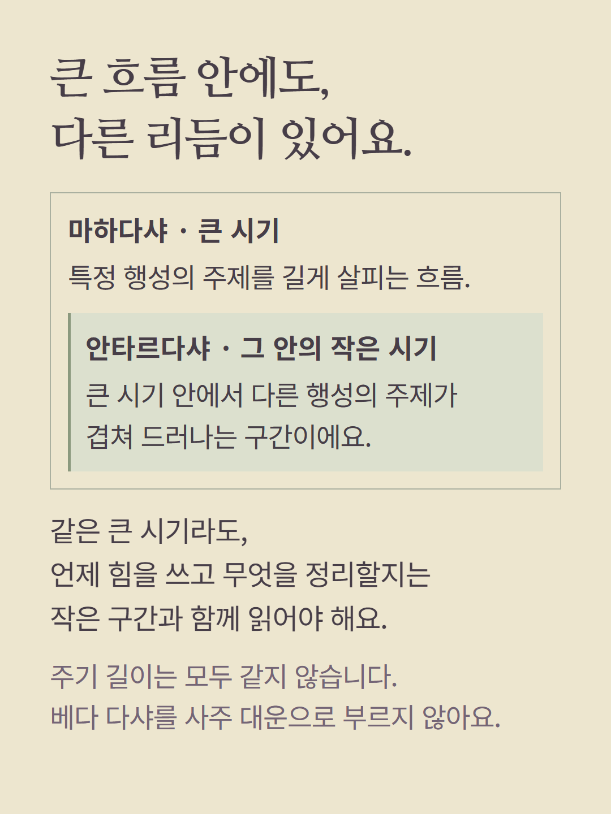
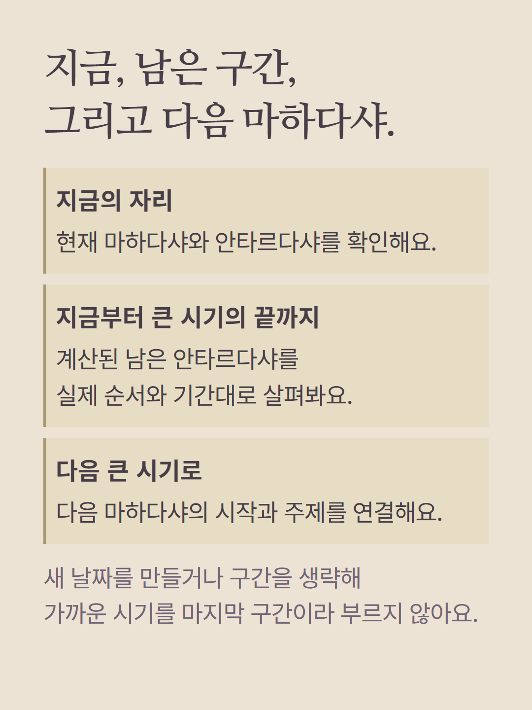
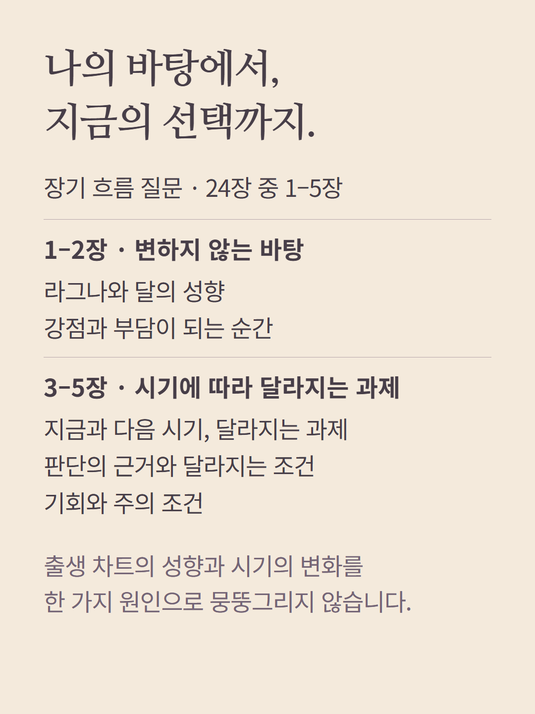
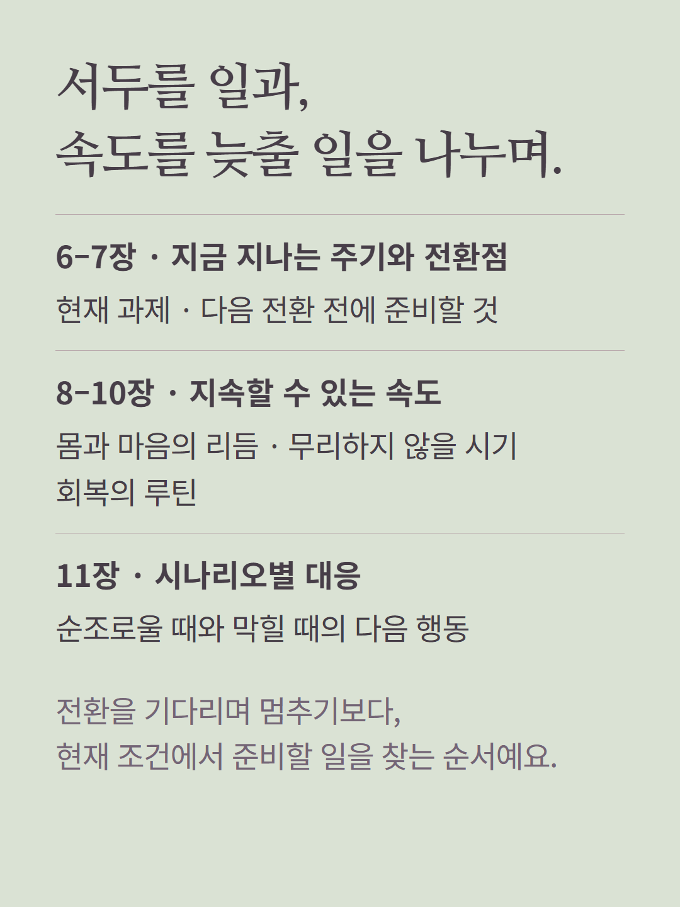
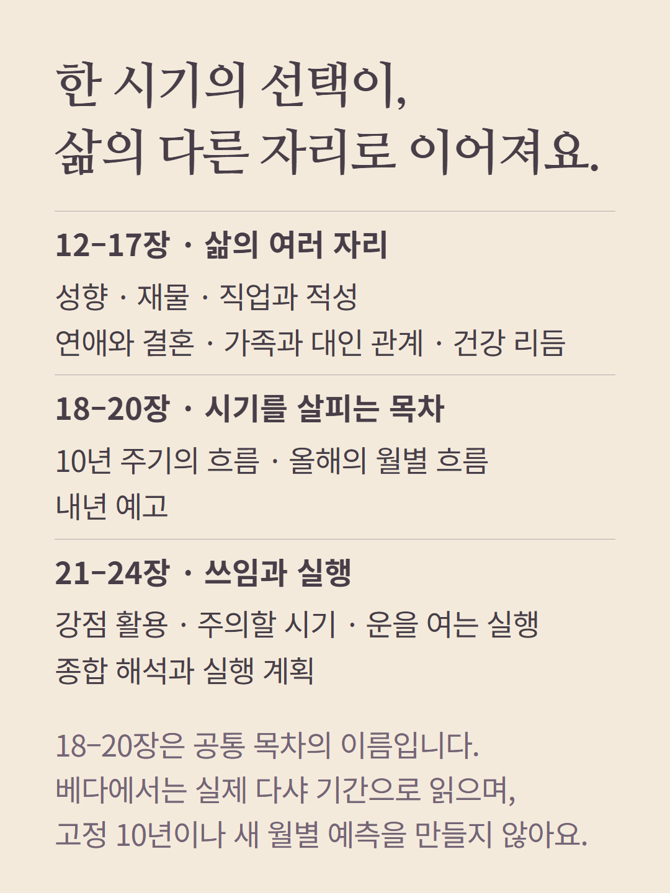
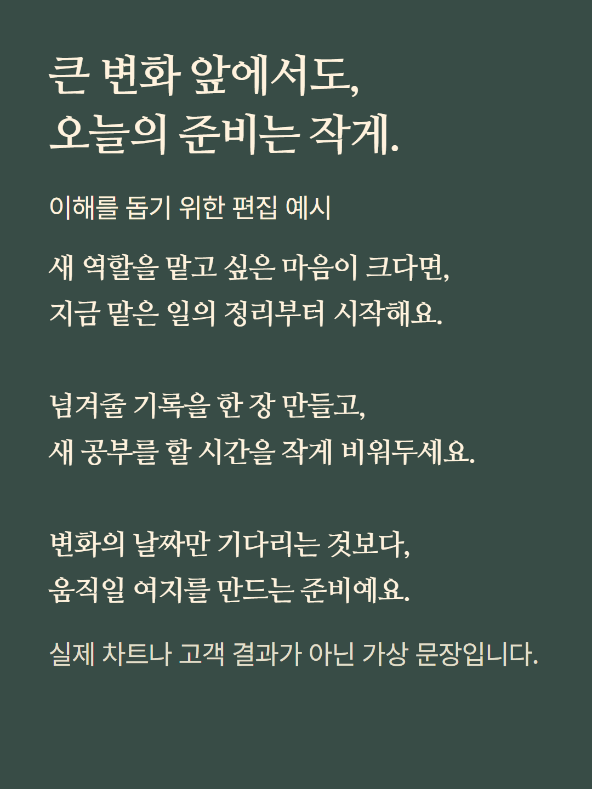
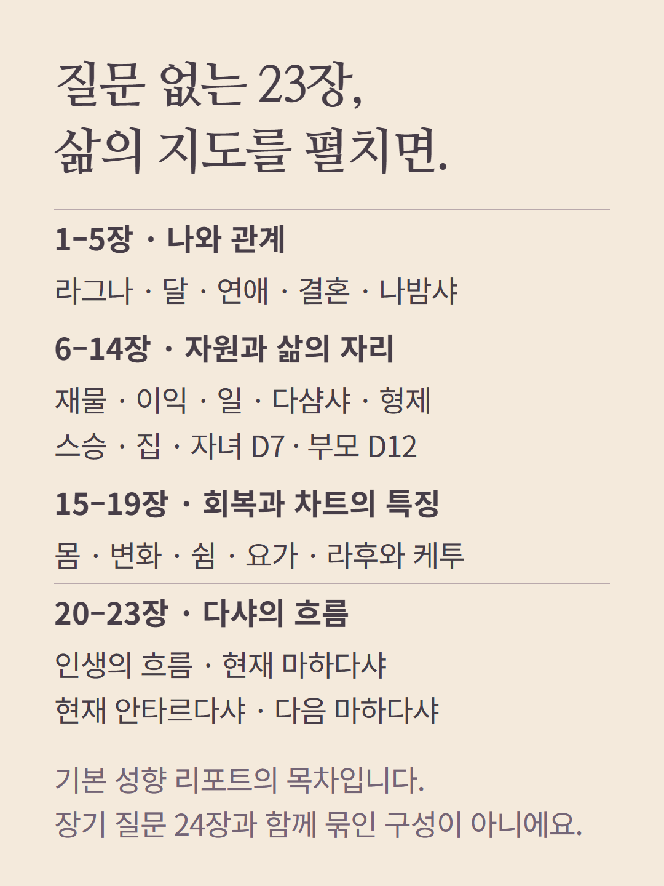
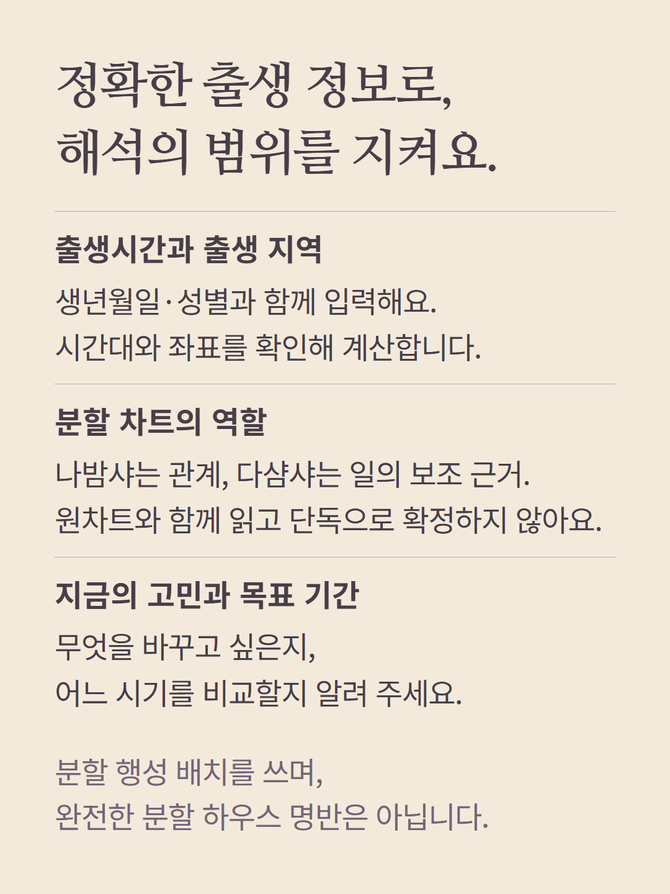

베다 참치의 장기 흐름 질문은 현재 마하다샤, 그 안의 안타르다샤와 다음 마하다샤의 실제 계산 기간을 바탕으로 전환을 준비하는 24장 구성입니다. 고정된 10년 주기나 사주 대운으로 바꾸지 않습니다. 공통 목차의 월별·내년 등 표현도 실제 다샤 근거의 기간과 범위 안에서만 해석합니다. 질문 없는 기본 성향 리포트는 23장으로 별도 구성입니다. 분할 차트는 원차트와 함께 보는 보조 근거이며 완전한 분할 하우스 명반을 제공한다는 뜻이 아닙니다. 예시는 가상 편집이고 AI가 작성합니다. 가격과 추가 질문 조건은 기존 화면에서 확인하세요.